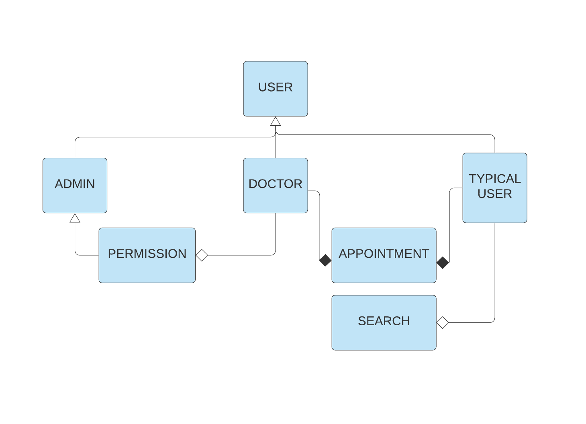

System Design Specification
1. Introduction
1.1 Purpose of the Document
The designs in this document describes all the architectural, data, interface and component level designs for the Hospital Management System. The system design specification gives all the explicit information about the requirements for the product and the product outcomes all together.
1.2 Document Conventions
The document conventions are maintained where font size are about 20pt and main topics are bold. Sub topics have a smaller font size of about 16pt and are bold, and numbered with the main topic number as a prefix, eg 1.1 to 1.4.
1.3 Intended Audience and Reading Suggestions
The intended audience for this document are project managers and developers. This document is meant to be used as a guideline for all the development needs of its creators. The document contains several technical terminologies and diagrams, hence readers are recommended to have basic knowledge about the topics covered in this system design specification.
2. Description of Design Components
2.1 Components Overview
We will be giving a basic overview of the various components to be used in our Hospital Management System.
2.2 Database
MySQL will be used as our database of our web applications. To represent various data from our project, we will be using tables included within the database software.
2.3 Server Software
Through the server software, we will be able to directly manipulate the contents of our database system based on commands provided from the server procedure proxy.
2.4 Server procedure proxy
We will be provided an interface for us to request information or submit updates to the server through the server procedure proxy. The clients (Teacher) will be given limited access to the server so that they can update the contents
3. High-Level Component
3.1 High-Level Component Diagram
The high-level component diagram of Hospital Management System is given below.
The list of the componets and their dependency are given below :
User : There are 3 types of user.(Admin, Doctor and typical user)
Admin: Other classes are dependent of admin.(Doctor, Permission)
Doctor : Depends on Admin indirectly through permission
Typical users : Depends on nothing
Permission : Depends on Admin.
Appointment : Depends on Typical User and Doctor
Search : Depends on Typical User
4. Class Design
The relation between the classes are highlighted in this section 4 represented by Class Design. A detailed description of each and every class is given here for a clear concept of their function in the system. The description is done below with diagram:

User
User: The user will be the common field for admin, doctors and typical users.
Admin
Admin will have the control of doctor accounts and can view user accounts.
Doctor
Doctor account needs access from admin and set appointments. Through this class the appointments can be edited and deleted. Doctor can view patient account and its details.
Typical users
Basically these are the patients who can set appoinmtnets through date and time and also can search doctors by name, id or date and time
Permission
Doctors need to get access from admin to activate the account.
Appointment
Doctors and typical users can create, edit and delete their appointments under this class.
Search
This festure is given to the patients to search their required doctor.
5. Database Design
5.1 ER-Diagram
The Entity Relationship Diagram(ER Diagram) is attached below along with their attributes to determine the clear concept of the database relation with the entities.

5.2 Purpose
In case of storing data in a computer system, for a data store to be considered persistent, it must write to non-volatile storage. The importance of the data store in most modern applications, making a poorly informed choice could mean substantial downtime or loss of data.
There are four main design approaches that a data store can take to make a Database Design:
Most of human resources management system data is structured and relational. So,it doesn't require a nonSQL database system such as Firebase. So, Usage of a MySql relational database will be of highest efficiency.
6. Implementation Plan
The common endpoint of the system will be user's mobile devices because the application is dependent on the android mobile device features